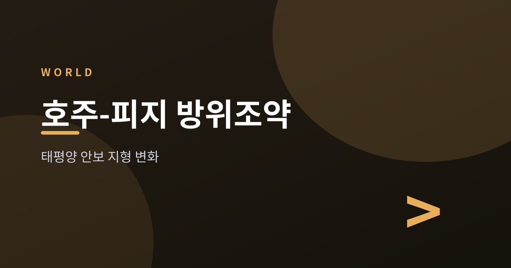
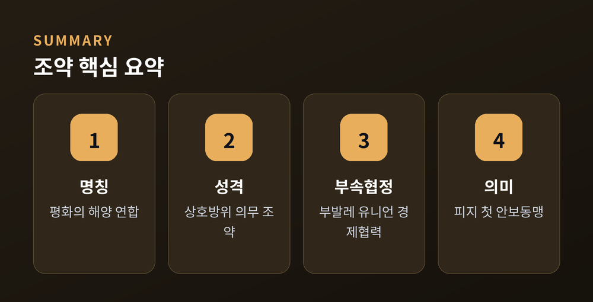
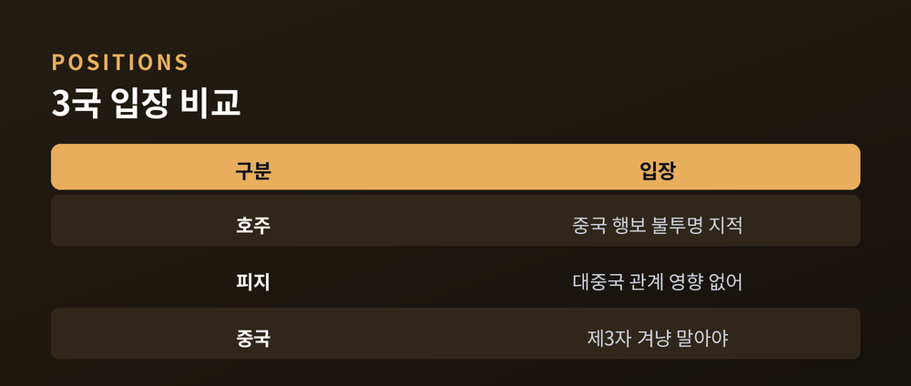
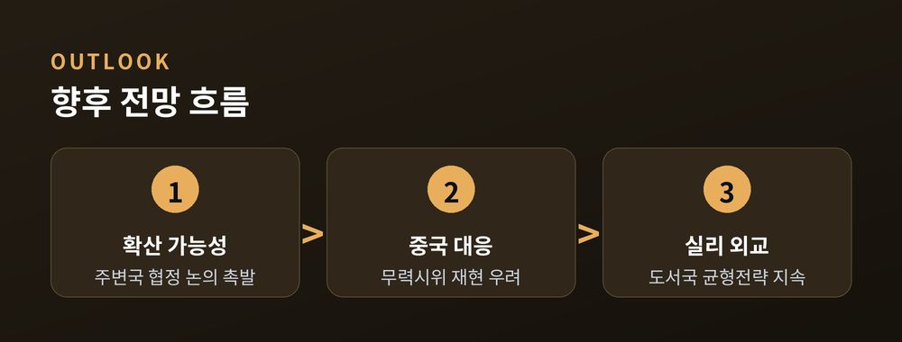

태평양에 그어진 새 안보선

2026년 7월 6일, 호주 앤서니 앨버니지 총리와 피지 시티베니 라부카 총리가 피지 수도 수바에서 상호방위조약 '평화의 해양 연합(Ocean of Peace Alliance)'에 서명했습니다. 두 나라 중 한쪽이 제3국의 공격을 받을 경우 공동으로 대응한다는 것이 핵심 내용입니다. 이는 피지에게는 사상 첫 안보동맹이며, 호주에게는 미국·뉴질랜드, 그리고 지난해 체결한 파푸아뉴기니에 이어 네 번째 상호방위조약입니다. 같은 날 두 정상은 호주가 향후 10년간 피지에 10억 호주달러(약 6억 9,300만 달러) 이상을 투자하는 경제협정 '부발레 유니언(Vuvale Union)'에도 서명했습니다. 로이터, AP, 유로뉴스 등 주요 외신은 이번 조약이 태평양 내 중국의 영향력 확대를 견제하려는 흐름 속에서 나왔다고 일제히 보도했습니다.
태평양 도서국들은 최근 몇 년간 중국과 서방 진영 양쪽으로부터 구애를 받아왔습니다. 중국은 인프라 투자와 경찰 협력 등으로 영향력을 넓혀왔고, 호주와 미국은 이에 맞서 안보·경제 지원을 확대해 왔습니다. 공교롭게도 조약 서명 당일, 중국 잠수함이 남태평양에서 장거리 탄도미사일 시험발사를 한 사실이 알려지며 시점을 둘러싼 해석이 분분합니다.
"평화의 해양 연합은 상호방위 의무를 도입한 것으로, 어려운 때 서로를 돕는 것보다 높은 의무는 없다." — 앨버니지 총리 (AP)
| 구분 | 핵심 입장 |
|---|---|
| 호주 | 중국의 군사적 움직임을 "역내 안정을 해치는 불투명한 행보"로 규정 |
| 피지 | "중국의 강한 반발은 없을 것"이라며 대중국 관계 훼손 우려 일축 |
| 중국 | "제3국을 겨냥한 것이 아니어야 한다"며 도서국 자주성 존중 촉구 |

이번 조약은 단순한 양자 협정을 넘어 태평양 안보 구도 전반에 신호를 던집니다. 라부카 총리는 그간 자국 경찰 조직에서 중국 경찰관을 철수시키는 등 안보 분야에서는 신중한 균형을 유지해 왔습니다. 이번 서명으로 피지는 경제적으로는 중국과 협력을 이어가되, 안보 면에서는 호주 쪽에 무게를 싣는 모습을 분명히 했다는 평가가 나옵니다. 다만 라부카 총리 스스로 이번 조약이 "중국과의 관계를 위협하지 않는다"고 밝힌 만큼, 이는 진영 선택이라기보다 실용적 균형 전략의 연장선으로 보는 시각도 있습니다.

전문가들은 이번 조약이 다른 태평양 도서국들에도 유사한 안보 협정 논의를 촉발할 수 있다고 봅니다. 동시에 중국이 이번 조치에 어떤 방식으로 대응할지도 주목됩니다. 미사일 시험발사처럼 무력시위 성격의 신호를 다시 보낼 가능성도, 반대로 도서국과의 경제협력을 강화하며 영향력 유지에 나설 가능성도 함께 거론됩니다. 태평양 도서국들이 강대국 경쟁의 '완충지대'가 아니라 스스로 실리를 취하는 행위자로 자리매김하려는 흐름은 앞으로도 계속될 전망입니다.
